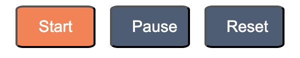

The Student Study Helper was designed to ease stress around studying by encompassing multiple study resources in one area. It includes a to-do list and a timer which can work hand-in-hand when trying to complete tasks in a timely and efficient manner.
Home Page
The home page is your ‘starting point’. This is where you can easily access all other pages.
• To gain access to the to-do list, you must simply click on the to-do list image or button (on the left) or the navagation bar above.
• Similarly for access to the timer, you must click on the timer image or button (on the right) or the navagation bar above.
To-Do List Page
The to-do list page is where tasks are able to be added or completed to take your mind off unnecessary information by recording and remembering it for you.
• To add a task, the task must first be typed into the ‘Add New Task’ textbox. After this, the ‘Add’ button must be clicked. This will add the new task to your to-do list.
• To complete a task, the orange box to the right of the added task must be clicked. This will remove the task from your to-do list.
• If a task is added without a name, a popup will appear saying ‘Kindly Enter Task Name!!!!’. You must click the ‘OK’ button and fill in the task box.
Timer Page
The timer is a useful tool that will assist you in studying. It gives you a visual on how long a study or break session will go for – decided by you. This means you can decide hpw long you want the timer to run for.
• To change the hours, minutes, and seconds for the timer, the time you want may be entered manually either from the keyboard or by using the up and down arrows in the input fields.
• To start the timer, the ‘Start’ button must be clicked. To pause the timer, the ‘Pause’ button must be clicked. To reset the timer to 0, the ‘Reset’ button must be clicked.
Navigation Bar
The navigation bar is where all of the pages are able to be accessed easily from any page.
• To access the home page, to-do list page, timer page, or help page their links must be clicked.